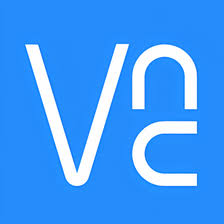
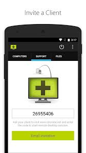

Arleth Vanessa Diaz Rodriguez
4-D
Soporte y Mantenimiento de Equipo de Computo
03/03/25
Las herramientas de soporte remoto son la columna vertebral de una infraestructura de TI resolutiva. Se utilizan para ayudar a los tecnicos a solucionar problemas de los usuarios finales y resolver problemas a larga distancia. El software de acceso remoto desempeña un papel fundamental en los entornos empresariales actuales. Con un importante aumento del trabajo remoto en varios sectores, incluidos TI, educación y servicio al cliente, crece la necesidad de software acceso remoto.
TeamViewer es una herramienta de software de soporte remoto que proporciona una versión gratuita solo para uso personal. Para aquellos que buscan herramientas de acceso remoto exclusivamente para uso personal, esta es una buena opción que deben tener en cuenta. Sin embargo, si TeamViewer sospecha de que estás utilizando la versión gratuita para uso comercial, pueden bloquear tus conexiones e impedirte acceder a sus dispositivos remotos.

Control Remoto: Permite acceder a un equipo de forma remota para consultar información, trabajar, realizar asistencia técnica, instalaciones o reparaciones. Transferencia de Archivos: Envío de archivos entre equipos remotos de forma segura Conexión por VPN: Establece una conexión VPN entre los equipos conectados, garantizando la seguridad entre ambos. Acceso no presencial: Permite configurar un acceso permanente a servidores u ordenadores, sin que sean necesarios permisos o conectarse cada vez. Acceso desde teléfonos móviles (coste adicional): Con Teamviewer se puede acceder de forma remota a equipos también desde teléfonos móviles. Pudiendo por ejemplo acceder a tu escritorio y trabajar con tu ordenador desde un teléfono. Reuniones online: Permite realizar reuniones por videoconferencia de manera instantánea o programar reuniones entre miembros del equipo. Wake-on-LAN: Permite conectarse a un ordenador que no está conectado a la red, “despertándolo” antes desde otro segundo ordenador. Asignación de tickets: Es una solución de asistencia técnica totalmente integrada que resulta ideal para técnicos de TI y proveedores de servicios gestionados. Esta plataforma basada en la nube le permite gestionar la atención al cliente y ofrecer un servicio de soporte técnico remoto. Management Console: plataforma de gestión en soporte web para administrar de manera intuitiva los contactos de TeamViewer y establecer conexiones TeamViewer Remote Monitoring and Management (coste adicional): Herramienta de monitorización de equipos, con la que el departamento de TI puede tener información sobre el estado de los equipos sobre incidencias, estado de salud, malware, virus, y otros problemas de técnicos o de seguridad.
VNC Connect es una plataforma de escritorio remoto que se utiliza a menudo para ofrecer a los trabajadores remotos la posibilidad de conectarse de forma remota desde sus propios dispositivos. VNC Connect utiliza lo que se conoce como búfer de fotogramas remoto (RFB) para transmitir la pantalla de un ordenador remoto a tu ordenador local, mientras devuelve simultáneamente las entradas.Este método de acceso remoto está bastante anticuado y no funciona tan bien como las tecnologías más nuevas. Splashtop utiliza un protocolo propio que ofrece a los usuarios finales la capacidad de enviar vídeo y audio de alta definición en tiempo real, lo que garantiza que los técnicos puedan ofrecer soporte rápido y efectivo durante una sesión de acceso remoto.
VNC Connect® cuenta con cifrado de extremo a extremo para todas las conexiones (AES de 128 bits para las suscripciones Home y Professional; AES de hasta 256 bits para las suscripciones Enterprise), autenticación de múltiples factores (2FA) y controles de acceso granulares.
ISL Light proporciona a los usuarios acceso remoto desatendido. ISL Light también ofrece una solución local y compatibilidad para múltiples monitores. Sin embargo, algunos usuarios finales informan de complicaciones con la interfaz de usuario. La experiencia del usuario es un aspecto importante cuando se trata de soporte remoto. Es por eso que Splashtop proporciona una interfaz de usuario sencilla tanto para usuarios finales como para técnicos. No hay duda de qué código usar para establecer una conexión y los técnicos pueden saber fácilmente con qué dispositivos están trabajando.
Es una solución de soporte remoto enriquecida en funciones, que incluye transferencia de archivos, chat de texto, llamadas de audio y video, grabación de sesión, acceso desatendido, tunelización RDP, modo administrativo, creación de informes y opciones de personalización.